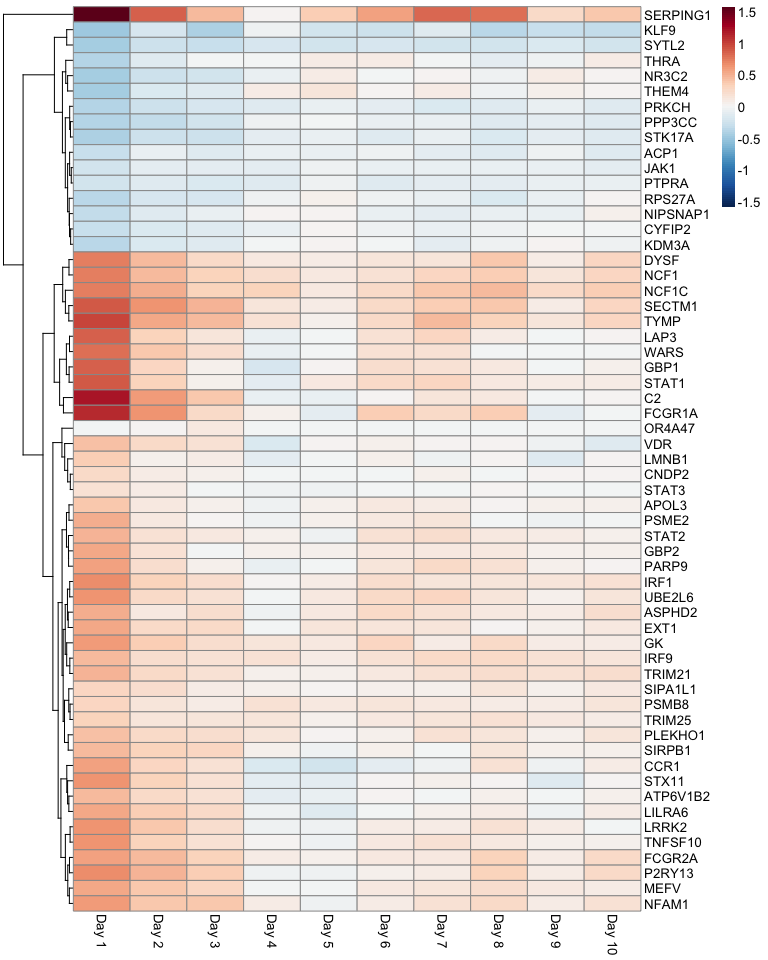
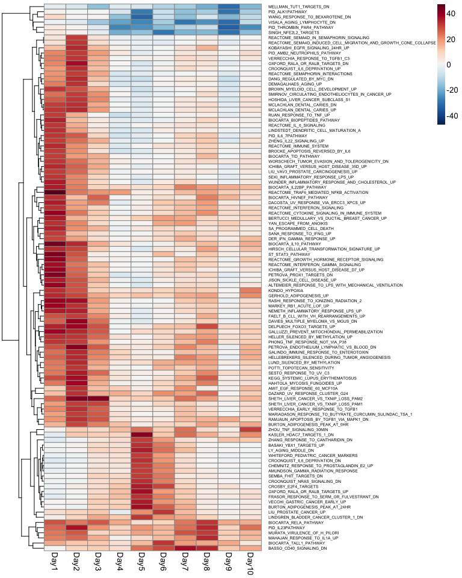

Reviewer: Aaron McKenna
#source("http://bioconductor.org/biocLite.R")
#biocLite("limma")
suppressMessages(library(limma))
suppressMessages(library(GEOquery))
suppressMessages(library(data.table))
suppressMessages(library(GSEABase))
suppressMessages(library("pheatmap"))
suppressMessages(library("RColorBrewer"))data_dir = "~/Documents/Data/GEO/"
gd <- getGEO("GSE45735", destdir = data_dir)## ftp://ftp.ncbi.nlm.nih.gov/geo/series/GSE45nnn/GSE45735/matrix/
## Found 1 file(s)
## GSE45735_series_matrix.txt.gz
## Using locally cached version: ~/Documents/Data/GEO//GSE45735_series_matrix.txt.gz
## Using locally cached version of GPL10999 found here:
## ~/Documents/Data/GEO//GPL10999.softpd <- pData(gd[[1]])
## get the actual expression data for five individuals (not sure which five, but subjects 2-6 were discussed a lot in the paper)
getGEOSuppFiles("GSE45735", makeDirectory=FALSE, baseDir = data_dir)## ftp://ftp.ncbi.nlm.nih.gov/geo/series/GSE45nnn/GSE45735/suppl/# Note the regular expression to grep file names
files <- list.files(path = data_dir, pattern = "GSE45735_T.*.gz", full.names = TRUE)
# Read in gzip-compressed, tab-delimited files
file_list_orig <- lapply(files, function(x) data.table(read.table(x, sep='\t', header=TRUE), key='Gene'))# Subset to only those rows where Gene contains only
# non-space characters This addresses problems with T14 file
# containing 28 invalid rows at end of file
file_list <- lapply(file_list_orig, function(file_list) subset(file_list,
grepl("^[^[:space:]]+$", Gene)))
## which files had the bad rows?
as.numeric(lapply(file_list_orig, nrow)) - as.numeric(lapply(file_list, nrow))## [1] 0 0 29 0 0# Remove duplicated rows
x=file_list[[1]]
file_list_unique <- lapply(file_list, function(x) {
x <- x[!duplicated(x$Gene), ]
x <- x[order(x$Gene), ]
# data.tables don't have rownames
# rownames(x) <- x$Gene
# this doesn't drop the first colunn in data.table, so I took it out
# x[, -1]
})
## again, which files had the duplicate rows?
as.numeric(lapply(file_list, nrow)) - as.numeric(lapply(file_list_unique, nrow))## [1] 28 28 28 28 28## keep genes in all five files (the data.table way, which I think isn't as nice..)
## also, the second file is missing day 8 (why??) - if you want to rbind them, you have to do this:
# file_list_unique[[2]][, X8:=NA]
## add a file ID to each file
# lapply(1:5, function(x) file_list_unique[[x]][, cat := x])
## turn into a big data.table
# full_data_dt = do.call('rbind', file_list_unique)
## only keep genes with all five
# full_data_dt[, N := .N, by=Gene]
# full_data_dt = full_data_dt[N == 5]
# full_data_dt[cat==3]
## make sure that they all have the same set of genes
gene_names <- Reduce(intersect, lapply(file_list_unique, function(dt) dt[,Gene]))
file_list_unique <- lapply(file_list_unique, function(dt) dt[gene_names])
# alternatively: lapply(file_list_unique, '[', gene_names)
## then drop the gene column
file_list_unique <- lapply(file_list_unique, function(dt) dt[, Gene := NULL])
## now cbind them all, to get one matrix with one row per gene, and one column per observation (individual/day)
matrix = as.matrix(do.call(cbind, file_list_unique))
## set row names
rownames(matrix) <- gene_names
## clean up pData( remove info about day 8 for second dataset, etc )
pd_small <- pd[!grepl("T13_Day8", pd$title), ]
## split out day and subject (what a pain in the ass)
pd_small$Day <- sapply(strsplit(gsub(" \\[PBMC\\]", "", pd_small$title), "_"), "[", 2)
pd_small$subject <- sapply(strsplit(gsub(" \\[PBMC\\]", "", pd_small$title), "_"), "[", 1)
## set matrix column names
colnames(matrix) <- rownames(pd_small)
## set the rnaseq data as though it's expression data (right?)
new_set <- ExpressionSet(assayData = matrix + 1)
pData(new_set) <- pd_small
## experiment design
design <- model.matrix(~subject + Day, new_set)
## normalize with voom
new_set_voom <- voom(new_set, design = design)
### now actually run limma analysis
lm <- lmFit(new_set_voom, design)
eb <- eBayes(lm)
## messing around
# Look at the other time-points
# topTable(eb, coef = "DayDay3", adjust='fdr', number = Inf, p.value = .01, sort.by="p")
# day1 = topTable(eb, coef = "DayDay1", adjust='fdr', number = Inf, p.value = .01, sort.by="p")
# day1 = data.table(day1, Gene=rownames(day1), key = "Gene")
# day3 = topTable(eb, coef = "DayDay3", adjust='fdr', number = Inf)
# day3 = data.table(day3, Gene=rownames(day3), key = "Gene")
# with(day1[day3, nomatch=0], plot(logFC, i.logFC))# get a list of all genes that are significant on any day (I am really not sure that this is correct - only one gene is significant on a day other than the first)
significant_genes = unique(unlist(sapply(1:10, function(x) rownames(topTable(eb, coef = sprintf("DayDay%d", x), adjust='fdr', sort.by='none', number=Inf, p.value=.01)))))
# now get the matrix of logFC for all those genes across all days
a = sapply(1:10, function(x) {
dt = topTable(eb, coef = sprintf("DayDay%d", x), adjust='fdr',
sort.by='none', number=Inf)
dt = data.table(dt, Gene=rownames(dt), key="Gene")
dt[significant_genes]$logFC})
rownames(a) <- significant_genes
colnames(a) <- sprintf('Day %d', 1:10)
# now plot it
pheatmap(a, cluster_cols = F, color=colorRampPalette(rev(brewer.pal(n = 11, name = "RdBu")))(100), breaks = seq(-max(abs(a)), max(abs(a)), length.out = 100))
# day2 = topTable(eb, coef = "DayDay2", adjust='fdr', number = Inf, sort.by="none")
# day3[day1_genes]
#
# sapply(1:10, function(x) topTable(eb, coef = sprintf("DayDay%d", x), adjust='fdr')$logFC)
# sapply(1:10, function(x) topTable(eb, coef = sprintf("DayDay%d", x), adjust='fdr', sort.by='none', number=Inf)$logFC)
# ?topTable
# library(plyr)
#Now do the Camera analysis.
c2_set <- getGmt("~/Documents//Biostat_578_repos/HW4_Benjamin_Vernot/GSEA-sets/c2.all.v4.0.symbols.gmt")
# c2_set <- getGmt("GSEA-sets/c2.all.v4.0.symbols.gmt")
gene_ids <- geneIds(c2_set)
# Camera requires gene-indices. Which function to use will
# depend on which version of limma you have.
# http://bioconductor.org/packages/release/bioc/news/limma/NEWS
# 'symbols2indices() renamed to ids2indices().'
if (exists("ids2indices")) {
sets_indices <- ids2indices(gene_ids, rownames(new_set))
}
if (exists("symbols2indices")) {
sets_indices <- symbols2indices(gene_ids, rownames(new_set))
}# cont_matrix <- makeContrasts("DayDay1", levels = design)
# res <- camera(new_set_voom, sets_indices, design = design, cont_matrix)
# res[1:10, ]
res <- vector("list", length = 10)
i=1
for (i in 1:10) {
contrast <- paste0("DayDay", i)
cont_matrix <- suppressMessages(makeContrasts(contrast, levels = design))
res[[i]] <- camera(new_set_voom, sets_indices, design = design, contrast = cont_matrix, sort = FALSE)
}## Warning in makeContrasts(contrast, levels = design): Renaming (Intercept)
## to Intercept## Warning in makeContrasts(contrast, levels = design): Renaming (Intercept)
## to Intercept## Warning in makeContrasts(contrast, levels = design): Renaming (Intercept)
## to Intercept## Warning in makeContrasts(contrast, levels = design): Renaming (Intercept)
## to Intercept## Warning in makeContrasts(contrast, levels = design): Renaming (Intercept)
## to Intercept## Warning in makeContrasts(contrast, levels = design): Renaming (Intercept)
## to Intercept## Warning in makeContrasts(contrast, levels = design): Renaming (Intercept)
## to Intercept## Warning in makeContrasts(contrast, levels = design): Renaming (Intercept)
## to Intercept## Warning in makeContrasts(contrast, levels = design): Renaming (Intercept)
## to Intercept## Warning in makeContrasts(contrast, levels = design): Renaming (Intercept)
## to InterceptDisplay the CAMERA results
PValue <- sapply(res, function(x) {
ifelse(x$Direction == "Up", -10 * log10(x$PValue), 10 * log10(x$PValue))
})
rownames(PValue) <- rownames(res[[1]])
PValue_max <- rowMax(abs(PValue))
PValue_small <- PValue[PValue_max > 30, ]
anno <- data.frame(Time = paste0("Day", 1:10))
rownames(anno) <- colnames(PValue_small) <- paste0("Day", 1:10)
pheatmap(PValue_small, cluster_cols=FALSE, fontsize_row = 5,
color=colorRampPalette(rev(brewer.pal(n = 11, name = "RdBu")))(100),
breaks = seq(-max(abs(PValue_small)), max(abs(PValue_small)), length.out = 100))